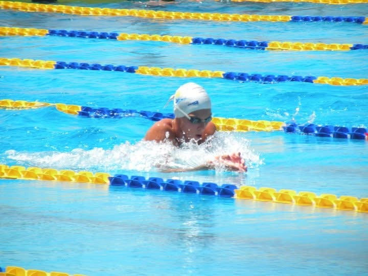
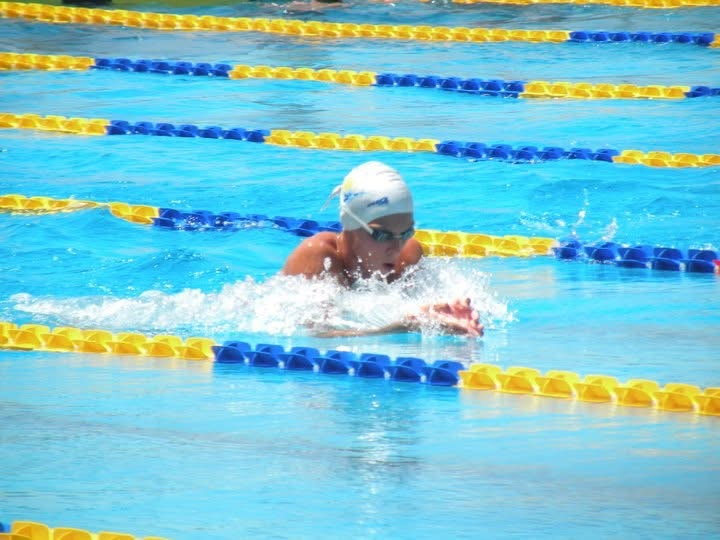
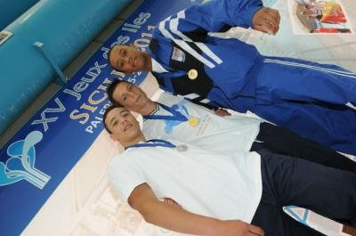
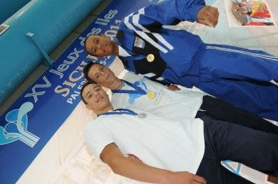

Swimming has been a big part of my life since I was a child. Below are the key highlights and most important milestones from each year of my journey.
1999 - 2009
I've been swimming since I was 4 years old. A few years later, I began racing in amateur competitions, and at 13 I started swimming competitively.
2009 / 2010
My first victory at the age group regional championship in the 100m and 200m breaststroke, qualyfying for my first time to the Summer Italian Championships in Rome.
 


2010 / 2011
Participated at the Jeux des îles, an international under-16 swimming competition, where I won two gold medals (50m and 100m breaststroke), one silver medal (4x100 medley relay), and one bronze medal (200m breaststroke).
 


2011 / 2012
I claimed the regional championship once again, and from that season onward I never lost the open regional title in the 100m and 200m breaststroke. I also competed at national level, reaching the finals at the Italian Championships.

2012 / 2013
At the Winter Regional Championships, I won the open regional championship in the 100m and 200m breaststroke, breaking the 100m regional record that had stood since 2004 (mine stood until 2018).


2013 / 2014
In my final year of high school, before earning my diploma and beginning my engineering studies, I won the open regional championship in 100m and 200m breaststroke and competed at the Italian level, reaching the finals.
2014 / 2015
This was my last season before retiring from competitive swimming to focus on my studies. I still participated in some national competitions and in a few high-level events against elite swimmers such as Ryan Lochte.